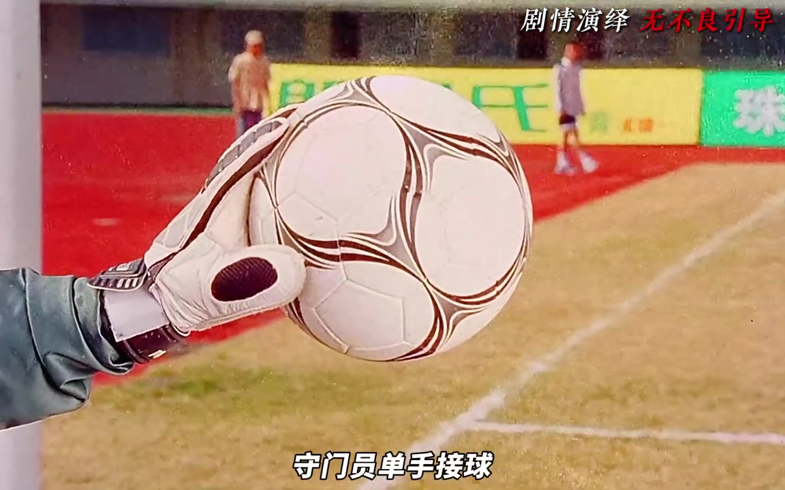
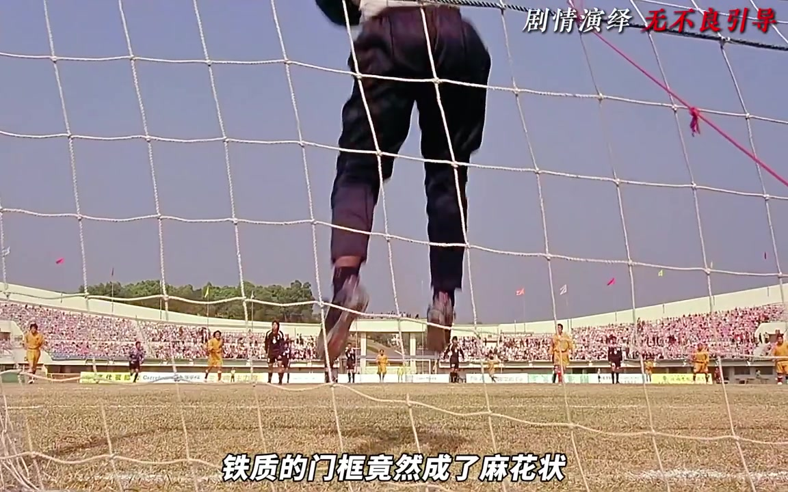
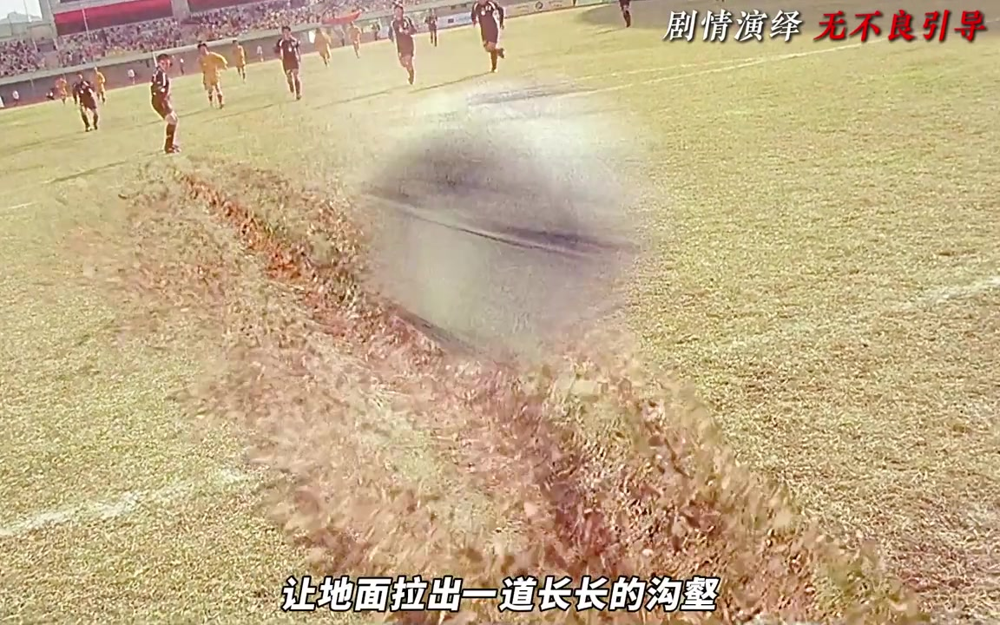
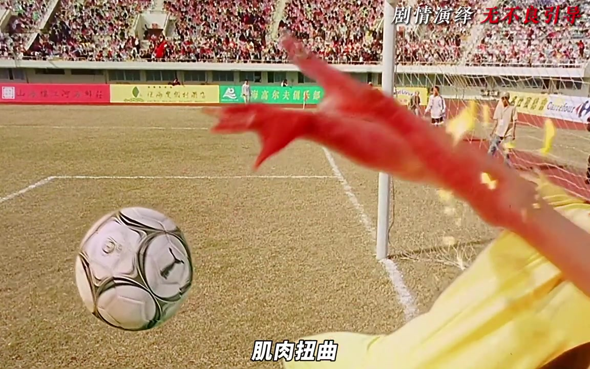
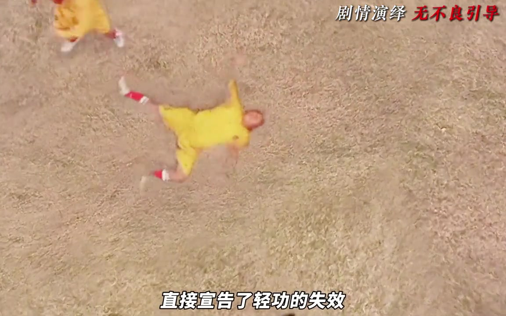
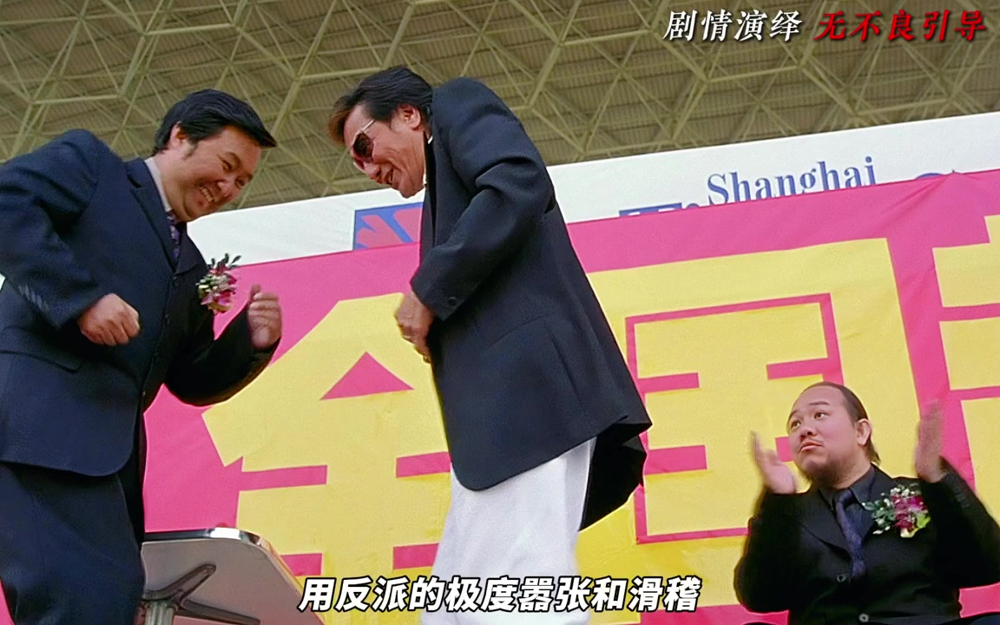
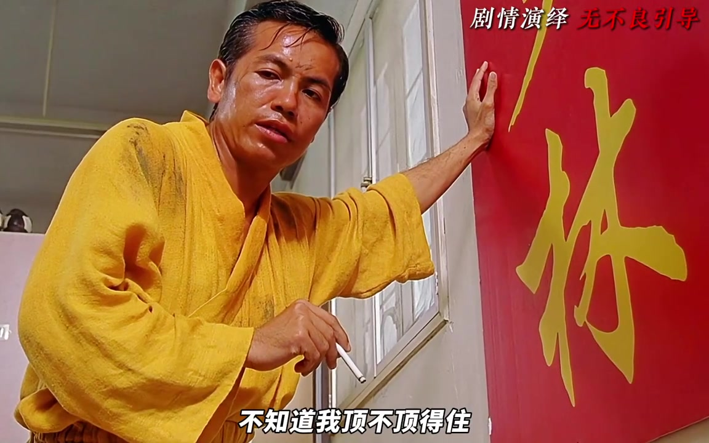

先让大家笑，再告诉大家这会要命
视频从少林队的更衣室开始。面对明显异常的魔鬼队，有人说该报警，有人刚喊完一定会赢，下一秒就急着找理由离场。阿星拉住队友苦求，越说越慌。解说者把这组荒诞对白看作一次情绪反差：台词还在喜剧频道，人物的身体和处境却已经进入生死局。
“你以为他们在搞笑，其实导演在给你打心理预防针：这场总决赛不是踢球，是玩命。”（00:43–00:49，UP 主观点）
阿星越踢越猛，守门员却越显得安静
回到球场，镜头先跟着阿星快速突破。第一脚射门被做成视觉奇观，转到守门员一侧，却只剩固定中景和单手接球。解说者把这种“夸张的动”撞上“诡异的静”视为反派战斗力的第一次定标；随后，食指挑衅的特写和魔鬼队全景，又把压力从力量差距推进到心理压制。

第二次进攻依旧被化解，守门员随手一捏，铁制门框发生形变；第三次，阿星腾空使出大力金刚腿，结果仍然没变。三次动作一次比一次强，三个落点却一样冷静。视频由此得出它的第一层判断：影片不是靠一句“反派很强”宣布危机，而是反复让观众亲眼看着主角的招牌能力失效。

“三次进攻，一次比一次猛，一次比一次绝望。”（02:49–02:53，UP 主观点）
力量谜底揭开，公平却没有回来
画外音把异常力量归因于“违禁药”。这解释了少林队为什么突然打不过，却没有提供申诉出口。紧接着的强雄片段，被解说者概括为第二层剥夺：主角不仅失去武力优势，连比赛规则的保护也一并失去。
这里的“科技作弊”“导演意图”均来自 UP 主的解读；视频并未提供制作资料或导演亲述，后文也只把它们作为观点呈现。
反击不再瞄准球门，而是瞄准伤员
魔鬼队开始反击。守门员奋力把球抛过半场，镜头用快速摇动和动态模糊追着足球；一脚之后，地面被拉出长长沟壑。四师兄虽然完成防守，镜头却悄悄转向达叔，再沿他的视线落到受伤的左手。队友仍在欢呼，观众和教练先知道伤势，这个信息差让下一轮进攻变得更难熬。

新一轮攻势里，火球的暖色没有带来温暖。魔鬼队员没有射空门，而是把球带到已经受伤的四师兄面前；远景里队友回防，近景里他被撞飞。随后的界外球争执和冷漠判罚，把暴力从身体层面延伸到制度层面。四师兄最终离场，少林队开始减员。

会的招数没有消失，却被对方原样压回来
视频把接下来的一组高密度动作称为“镜像摧毁”：大师兄用铁头功，对方也用头并以更快的冲击破防；六师弟以轻功腾空，镜头上摇后让反派出现在更高处；二师兄使出旋风地堂腿，魔鬼队便用同样的动作从四周包围。少林绝技仍然可见，但每一种都被复制并压倒。

场上是骨折声和惨叫，裁判只看表、吹哨，平静宣布上半场结束。视频强调的不是某一次犯规，而是“能力失效”和“申诉失效”同时发生。
惨叫之后，反派竟跳起恰恰
极惨烈的节点后，影片插入一段荒诞舞蹈。反派越嚣张滑稽，少林队越显得狼狈。阿星终于冲上前，对踢动作又突然定格成漫画式构图；裁判却只对少林队亮黄牌。随后一记来自画外的攻击没有交代动手者，留白把压抑许久的情绪转成笑声。

“这种情绪的撕裂感，比直接拍流血更让人愤怒。”（07:32–07:36，UP 主观点）
英雄没有立刻翻盘，角落里先有人说“我来”
场景回到更衣室，光线压暗，空间逼仄。魔鬼队的压制已经从球场带进团队内部，达叔和大师兄的争吵几乎把队伍撕开。就在这时，一个画外音插进来，镜头缓缓推向角落：平时不起眼的角色扶着门框，说自己也不知道能不能顶住。

视频在这里结束，没有展示下半场的反击结果。它只把伏笔放稳：当个人武力、比赛规则和团队状态三层保护都被拆掉，下一步不能再靠阿星单点开挂，而要先有人补位、让队伍重新站起来。